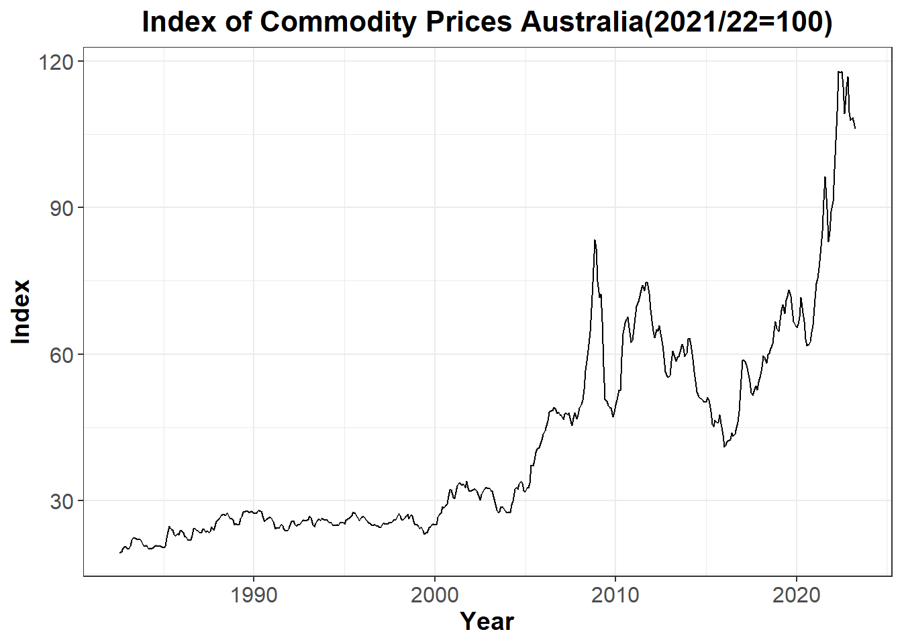
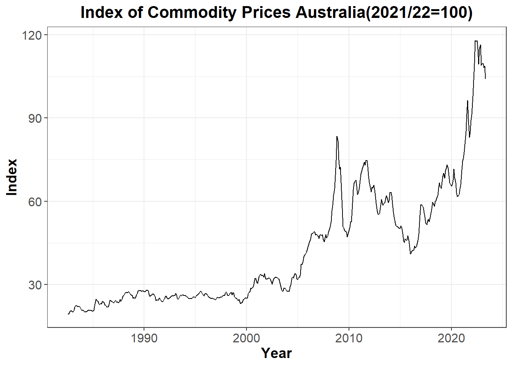
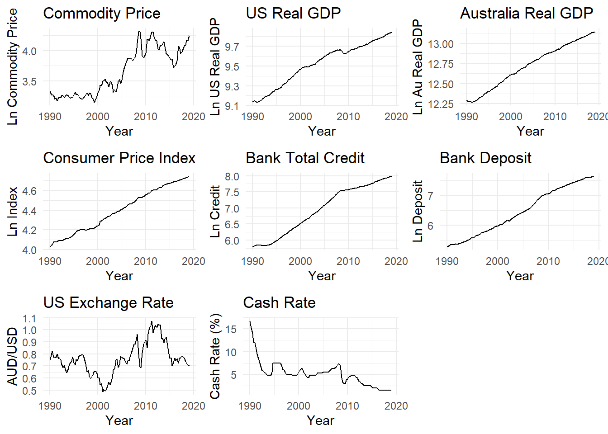
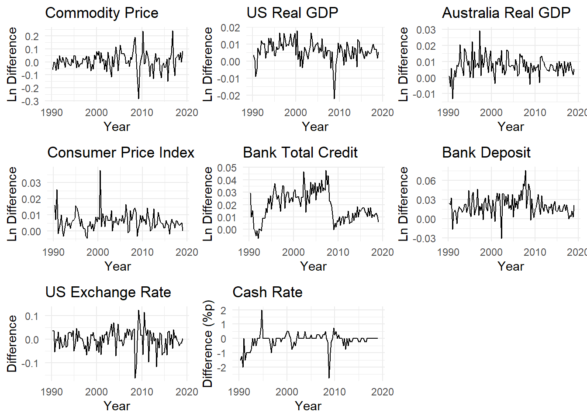
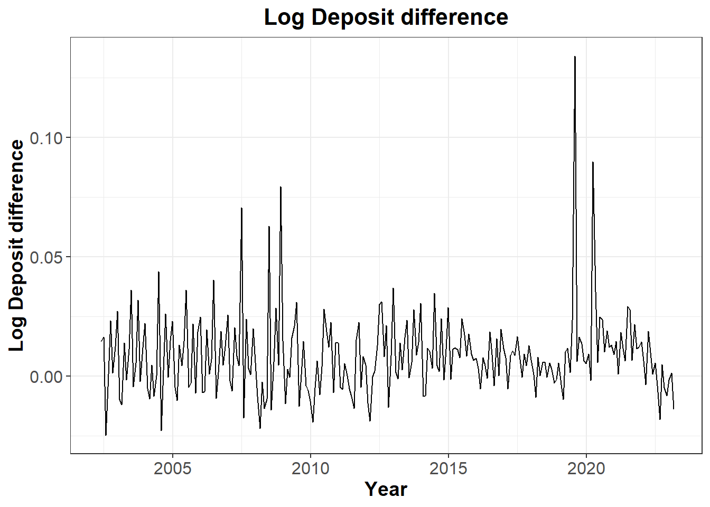

library(readrba)
library(tseries)
library(ggplot2)
library(cowplot)
library(dplyr)
library(zoo)
library(xts)Research Proposal
Abstract.
Keywords. SVAR, monetary policy, credit, deposit
The objective, question, and motivation
Objective
The research objective is to investigate the relationship among monetary policy, banks deposit and credit growth, while considering other important macroeconomic variables in Australia, using a structural vector autoregression model.
Research question
How does the monetary policy and deposit growth affect the banks’ credit growth in Australia?
Motivation
Banks’ credit plays an important role in the economy as it supports investment for firms, consumption for households, and sometimes causes inflationary pressure. Thus, the effect of monetary policy on credit has been deemed to be an important concern for researchers and central bankers. A channel that explains how monetary policy works through credit is called the credit channel. In the credit channel, changes in monetary policy affect the required reserves of banks, which cause banks to change the quantity of loans they provide (e.g., Bernanke and Blinder 1992; Jimenez et al. 2014). However, the effect of changes in reserves has been estimated to be too small to exert a meaningful influence on bank lending (Woodford 2010).
One suggestion to fill this gap is proposed by Dreschler et al. (2017). In the paper, they argue that banks’ credit substantially reacts to monetary policy through changes in deposits. According to their estimation, it accounts for the entire transmission of monetary policy through the bank’s balance sheet. I incorporate this deposit channel in the SVAR framework to evaluate the effect of monetary policy with deposit change on banks’ credit.
Data and their properties
Following Berkelmans (2005), variables are largely divided into two groups: the external and domestic sectors. For the external sector, real commodity prices (such as oil prices) and real China’s GDP are used. The domestic sector is captured by real Australian GDP, inflation rate, banks’ credit, deposit, US exchange rate, and cash rate.
At the moment, I am loading the related packages for the data work as follows:
The external sector is included considering Australia’s status as a small open economy that heavily relies on foreign economic conditions. Commodity prices are included as they are known to capture the global business cycle that affects the domestic economy. The Index of Commodity Prices Australia (ICP) will be used for commodity prices. ICP is a measure of the average change in prices of Australia’s major export commodities over time using price data from a basket of commodities, including minerals, agricultural products, and energy resources. The ICP is a key indicator of Australia’s terms of trade. The inclusion of China’s GDP is also important as China has been Australia’s biggest trading partner in recent years, with 26% of total Australian exports and 29% of imports in 2022.
# Codes below are the same across variables
# download data from RBA, set date format
ICP <- readrba::read_rba(series_id = "GRCPAIAD")
ICP$Date <- as.Date(ICP$date, format = "%Y-%m-%d")
# log transformation
ICP$ln_ICP <- log(ICP$value)
# plot
plot1 <- ggplot2::ggplot(data = ICP, aes(x = Date, y =value)) +
geom_line(color = "black") +
labs(title = "Index of Commodity Prices Australia(2021/22=100)", x = "Year", y = "Index") +
theme_bw() +
theme(plot.title = element_text(size = 16, hjust = 0.5, face = "bold"),
axis.title = element_text(size = 14, face = "bold"),
axis.text = element_text(size = 12),
legend.position = "none")
print(plot1)

For the domestic sector, real GDP is included to capture the level of domestic economic activity, while the inflation rate is included as the Reserve Bank of Australia (RBA) has adopted an inflation target since 1990, which strongly affects monetary policy. Banks’ credit and deposit are key variables in the model as they form contemporaneous relationship with monetary policy. Finally, the cash rate is the primary tool of monetary policy for the RBA, and it is therefore an essential variable to include in the model.




Quarterly data between Q1 1990 and Q4 2022 was acquired from the Reserve Bank of Australia (RBA) and the Australian Bureau of Statistics (ABS) using the “readrba” and “readabs” packages in R. The data were mostly transformed into logarithmic form, except for inflation rate and cash rate, allowing the coefficients to be interpreted as elasticities. The inflation rate is presented in quarter-on-quarter percentage change, while the cash rate is presented in percentage points.
As we see above, stock and flow variables mostly have upward trend and it disappears when I take log and difference. Some variables such as GDP and deposit exhibit spark around 2020.
The model and hypothesis
The model
The structural VAR model with \(p\) lags is given by
\[ \begin{align} B_0y_t &= b_0 + B_1 y_{t-1} + \dots + B_p y_{t-p} + u_t \\ u_{t}| Y_{t-1} &\sim {iid} ( 0_N, I_N) \end{align} \] Where \(B_0\) is a matrix of contemporaneous relationships, \(y_t\) is a vector of endogenous variables, \(y_{t-1}\), \(\dots\), \(y_{t-p}\) are vectors of lags, and \(u_t\) is a vector of independent structural shocks.
\(y_t\) contains eight variables: commodity prices (\(com_t\)), China’s real GDP (\(cgdp_t\)), domestic real GDP (\(gdp_t\)), inflation rate(\(\pi_t\)), banks’ credit(\(c_t\)), banks’ deposit(\(d_t\)), USD exchange rate (\(ex_t\)), and cash rate (\(i_t\)).
Premultiplying \(B_0^{-1}\) to the structural VAR model gives us the reduced form representation as follows:
\[ \begin{align} y_t &= \mu_0 + A_1 y_{t-1} + \dots + A_p y_{t-p} + \epsilon_t \\ \epsilon_{t}| Y_{t-1} &\sim {iid} ( 0_N, \Sigma) \end{align} \] where \(A_i=B_0^{-1}B_i\), \(\epsilon_t=B_0^{-1}u_t\), and \(\Sigma=\)\(B_0^{-1}B_0^{-1 \prime}\)
Using the reduced form equations, we can estimate \(\Sigma\). However \(\Sigma\) has \(8(8+1)/2=36\) unique elements, which is the number of equations, yet we have \(8^2=64\) unknowns in \(B_0\). Hence I need to impose exclusion restrictions on \(B_0\) to identify the system.
Assumptions for \(B_0\) matrix is as follows:
- Since Australian economy is a small open economy, I assume that the domestic variables have no effect on external variables while shocks from the external sector have simultaneous effect on the domestic economy.
- GDP is affected from the external sector but not affected by other domestic variables contemporaneously
- Inflation is affected from the external sector and GDP but not affected by other domestic variables contemporaneously.
- Cash rate is affected from the external sector, GDP and inflation but not affected by other domestic variables contemporaneously.
- Deposit is affected from the external sector, GDP, inflation, and cash rate but not affected by other domestic variables contemporaneously. I assume that profit maximization motive makes banks to adjust the deposit rate at the same period that RBA adjusts the cash rate. And deposit volume changes accordingly.
- Credit is affected from the external sector, GDP, inflation, cash rate, and deposit but not affected by other domestic variables contemporaneously. Since the deposit is the most stable and major funding source for banks, I assume that banks reduces credit outstanding in response to deposit change.
- The exchange rate is affected from all variables contemporaneously.
Note that this assumption and thus order of the variables in \(y_t\) is subject to change over the course of the research upon any better identification assumption.
Hypothesis
I want to estimate how monetary shocks affect credit while controlling for deposits. I expect that credit will be less responsive to monetary policy when deposits are included as an endogenous variable. This expectation is consistent with the deposit channel of monetary policy, where banks’ credit is heavily influenced by changes in deposits in response to monetary policy.
References
Itamar Drechsler, Alexi Savov, and Philipp Schnabl, 2017. ”The Deposits Channel of Monetary Policy,” The Quarterly Journal of Economics, Oxford University Press, vol. 132(4), pages 1819-1876.
Kilian, L., & Lütkepohl, H. 2017. “Structural Vector Autoregressive Analysis (Themes in Modern Econometrics),” Cambridge: Cambridge University Press.
Leon Berkelmans, 2005. “Credit and Monetary Policy: An Australian SVAR,” RBA Research Discussion Papers rdp2005-06, Reserve Bank of Australia.